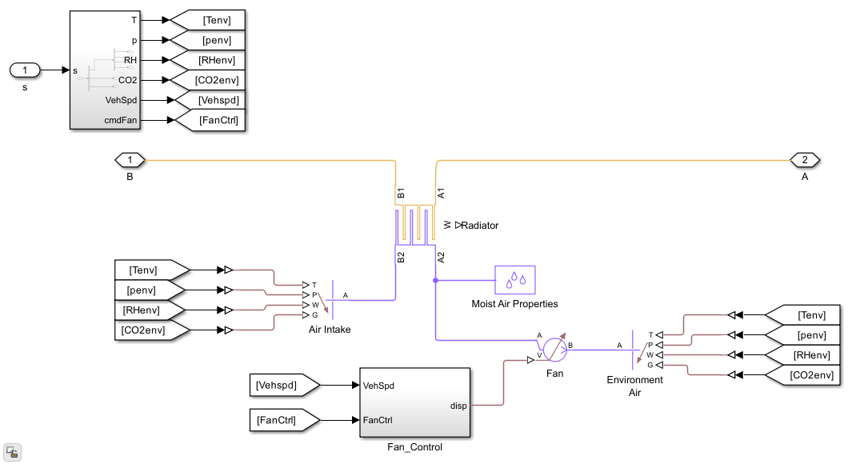
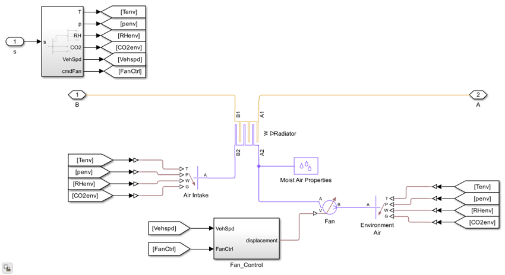

Estimate Range Under Hot Ambient Conditions
Vehicle workflow — Exercises radiator heat rejection under hot-ambient conditions.
Reject coolant heat to ambient air
Component path: Components / Radiator

Radiator component for the BEV thermal management system. The radiator dissipates heat from the coolant loop to the ambient air, maintaining coolant temperature within acceptable limits for battery, motor, and charger operation.
Radiator is the maintained physical heat-rejection fidelity. Keep it whenever the coolant-loop energy balance, ambient conditions, ram air, or fan demand can limit battery, motor, inverter, or charger temperature.
| Model | Description | Use case | Templates | Documentation & files |
|---|---|---|---|---|
| Radiator | Coolant tubes, air fins, and fan-driven heat dissipation to ambient. | All electro-thermal vehicle configurations that include a coolant loop. Essential for maintaining thermal balance during sustained driving and charging. | VehicleElectroThermal | Documentation · Parameters |
Workflow/Vehicle/RangeEstimation/) — The radiator rejects heat from the coolant loop during drive-cycle runs. Fan commands and vehicle speed determine airflow.
Vehicle workflow — Exercises radiator heat rejection under hot-ambient conditions.
Input bus s supplies environment conditions, vehicle speed, and the fan command. Coolant ports A and B connect the thermal-liquid loop. Use Simscape logging to inspect heat transfer.
| Port / signal | Direction | Description |
|---|---|---|
s.Env | Input | Ambient temperature, pressure, relative humidity, and CO2 conditions. |
s.VehSpd | Input | Vehicle speed used for ram-air flow. |
s.cmdFan | Input | Fan speed command used for forced airflow. |
A | Conserving | Thermal-liquid coolant inlet connection. |
B | Conserving | Thermal-liquid coolant outlet connection. |
Verify heat dissipation under controlled coolant flow and ambient conditions.
Run the maintained Radiator test case before integration.
Chiller | Pump | Battery Heater